Samedi 10 octobre à partir de midi, dimanche 11 jusqu'au milieu
de l'après-midi. Le programme complet est dans l'onglet Le week-end.
Quelques détails
De quoi sortir le bon nombre de lits et caler les allers-retours
à la gare. Les votes, eux, sont dans l'onglet Le week-end, chacun sous
la photo de ce qu'il décide.
Le couchage
L'arrivée
Les votes — déjeuner, escape game, soirée, dimanche — sont
,
sous les photos.
C'est envoyé ?
Relis, puis envoie. WhatsApp s'ouvre avec le message déjà écrit :
tu choisis la conversation, tu vérifies, tu envoies.
Qui
—
Présence
—
Couchage
—
Arrivée
—
Départ
—
Samedi midi
—
Escape game
—
Samedi soir
—
Envies
—
Le jour J, on ne te demandera rien : si tu veux
participer, c'est .
Tes réponses restent dans ce téléphone. Rien n'est transmis avant que tu appuies.
Le déroulé
De samedi midi à dimanche après-midi
Deux moments sont soumis au vote : l'escape game de 17h et la suite
de la soirée. Ça se règle à l'étape 2 de ta réponse.
Samedi 10 octobreLe jour
Le déjeunerPour celles et ceux qui sont déjà là. Les autres nous rejoignent dans l'après-midi
Tu es là à midi ?
On mange à midi. Ça ne conditionne rien d'autre que les quantités.
14h30Mölkky et pétanque
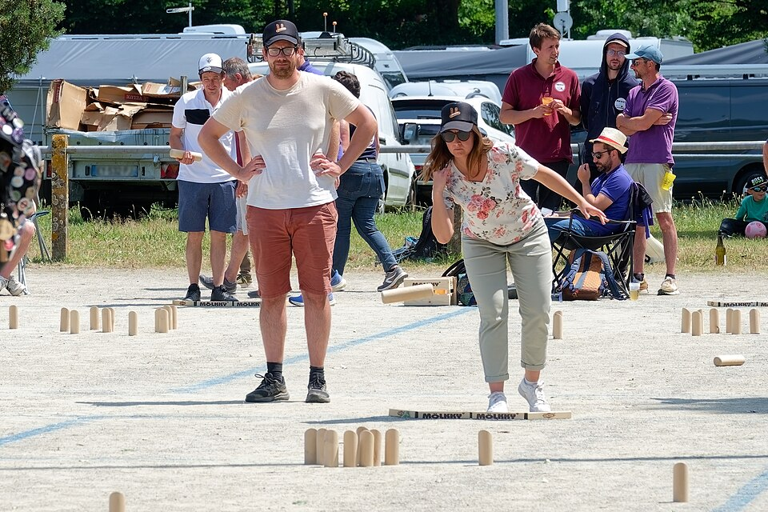
MölkkyDouze quilles, un lanceur, des équipes de trois
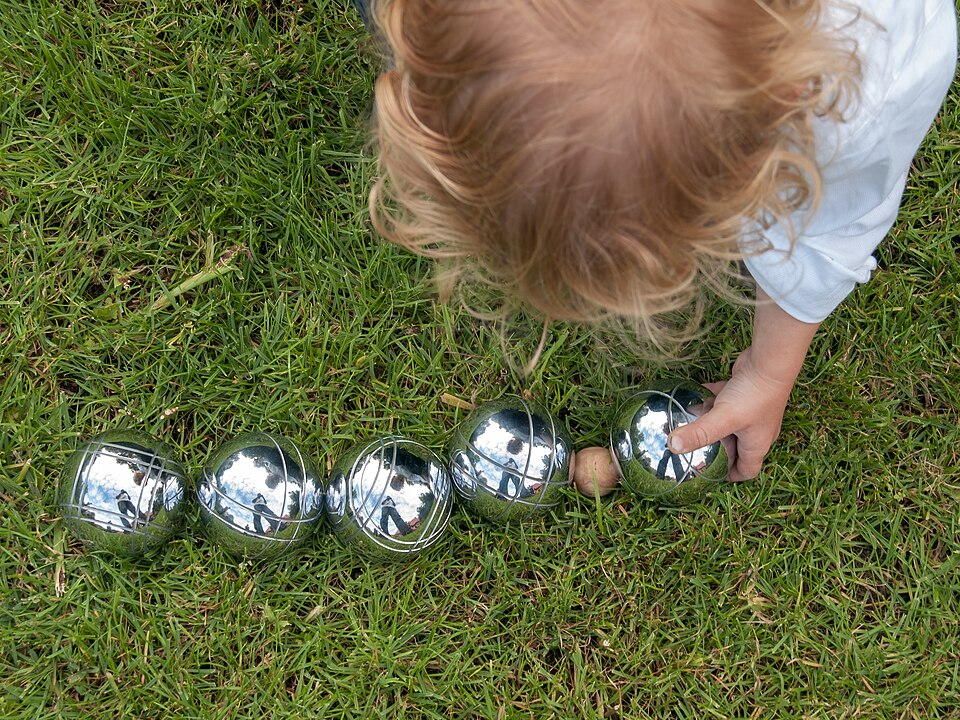
PétanqueAu jardin, jusqu'à ce qu'on parte
Tu joues ?
17h00L'escape game
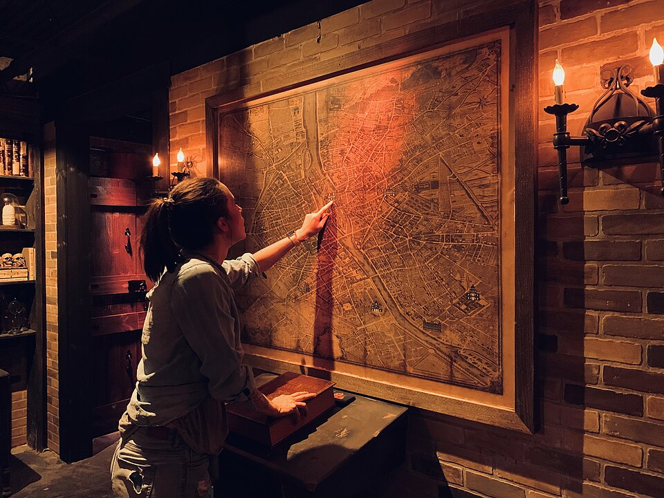
Move To Aixit, quatre salles en parallèleAux Milles, à vingt minutes de la maison. On se répartit en équipes de quatre ou cinq : Pandora, Chasseurs de trésor, Les Explorateurs urbains, Le GIGN. Retour vers 18h30. Rien à sortir sur place : c'est réglé d'avance, comme les repas
Tu en es ?
Rien à sortir le jour J, c'est réglé d'avance comme les repas. On a juste besoin du nombre exact : quatre salles se réservent à l'avance.
19h00La suite, au vote
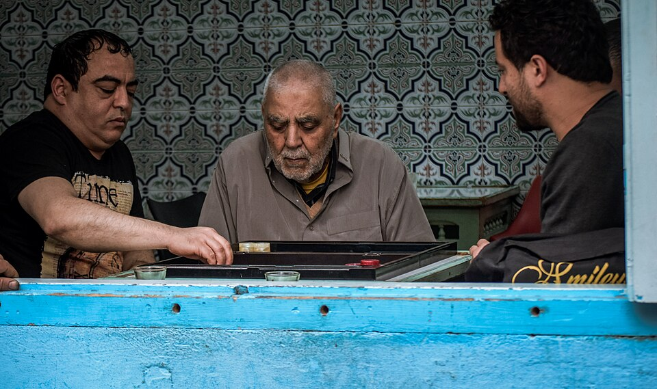
On reste sur placeLe bar à jeux de Move To Aixit : trois cents jeux, des planches et des tapas, ouvert jusqu'à 22h. Aucun trajet de plus
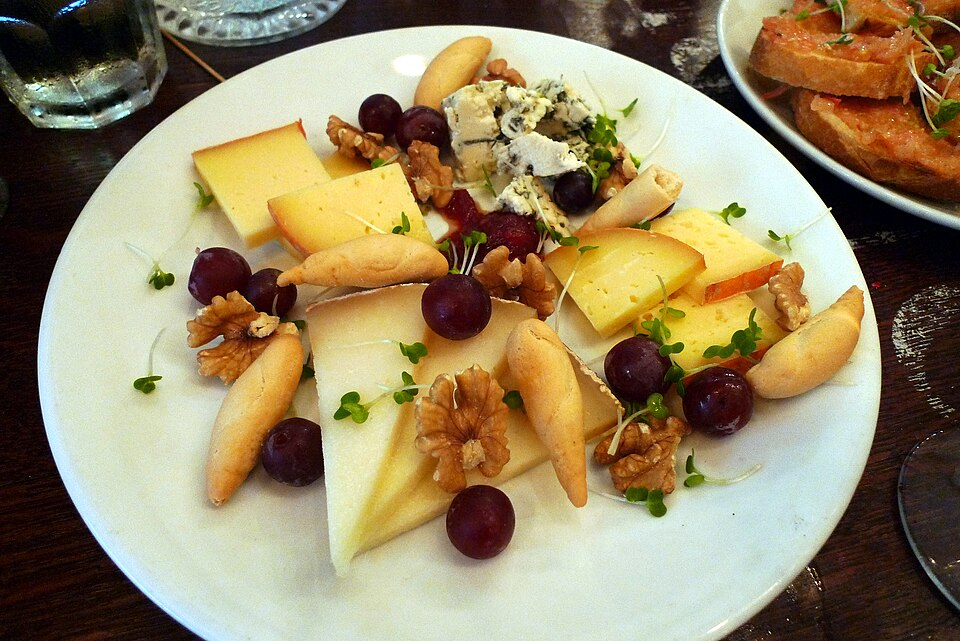
On rentreApéro dînatoire à la maison, servi en continu par le traiteur. C'est le repas du soir
Tu votes quoi ?
Après l'escape game, on reste sur place ou on rentre. La majorité tranche.
22h00Le gâteau, trente bougies
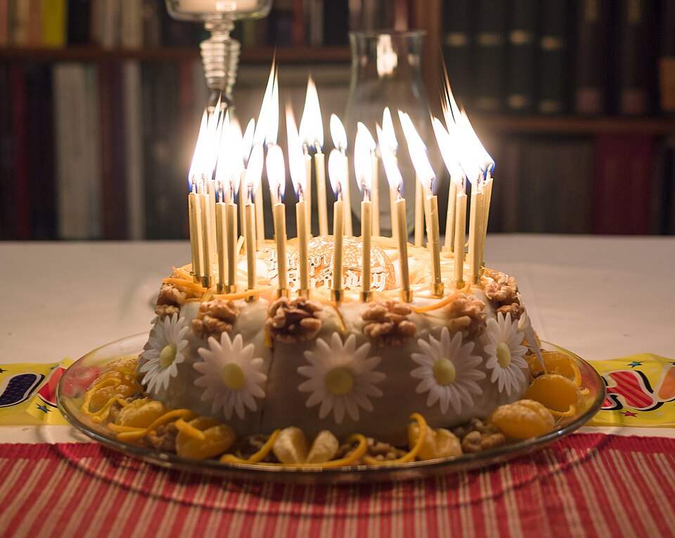
Il est commandéN'en apporte pas
22h30La soirée jeux de société
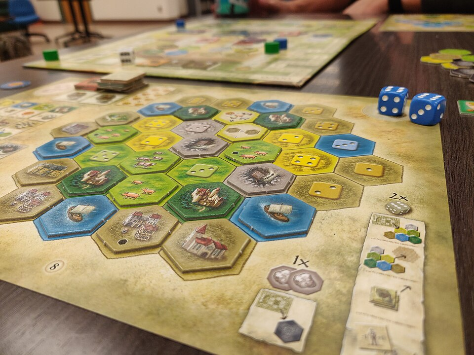
La grande table, débarrasséeTime's Up, Blanc-Manger Coco, Skull, Loup-Garou. Et le blind test des trente ans : trente titres, un par année d'Elise
Tu tiens jusque-là ?
Dimanche 11 octobreLe lendemain
11h00Le brunch
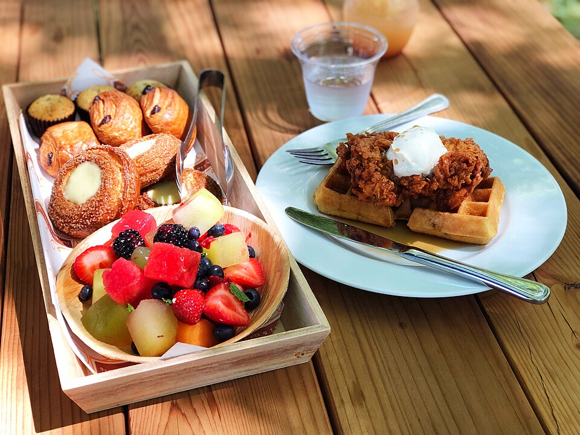
À la maisonSalé, sucré, du café en quantité. Il n'y a pas d'heure de fin
ensuiteActivité libre, selon les départs
Rien d'imposé l'après-midi : chacun cale sa fin de week-end sur son train.
Ces quatre-là sont à portée, et c'est vous qui dites lesquelles vous tentent.
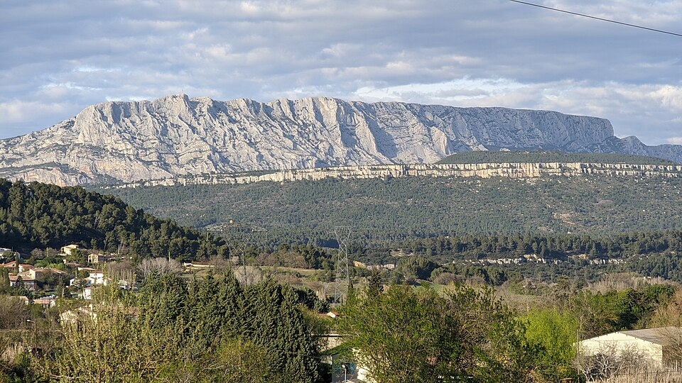
Vallon de Saint-Ser1 h 30 aller-retour sur le versant sud, sous la crête que Cézanne a peinte quatre-vingts fois
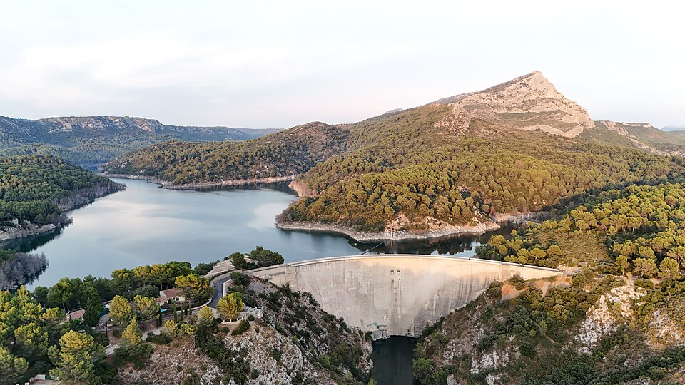
Barrage de Bimont1 h de balade plate au-dessus du lac, avec la montagne en face
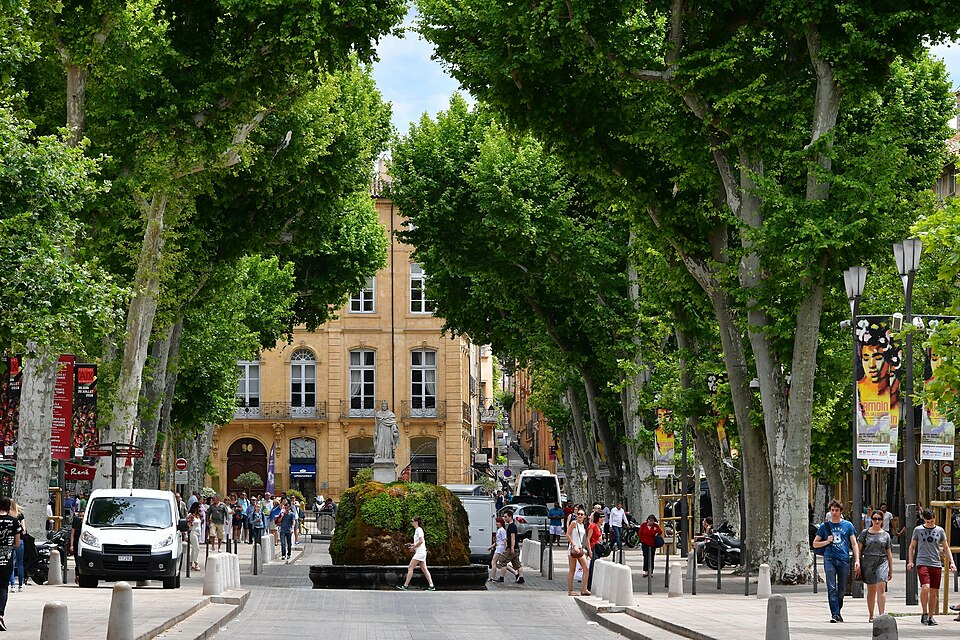
Le vieil AixCours Mirabeau, les ruelles et les fontaines. C'est aussi le programme s'il pleut
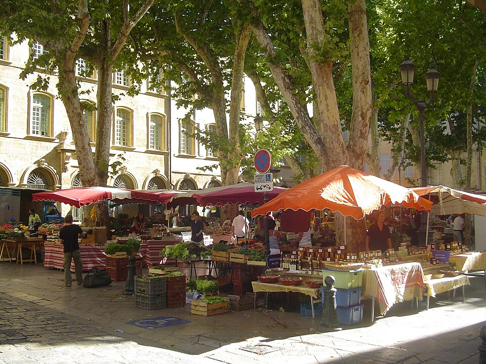
Le marché, avant le brunchPlace Richelme dès 8h, à dix minutes à pied. Fromages, olives, calissons
Ce qui te tente 0 choisi
Coche ce que tu veux. Les plus demandés seront retenus.
Les départsOn raccompagne à la gare — indique ton train de retour
Le trajet
Deux gares, et on vient te chercher
Aix a deux gares qui n'ont rien à voir l'une avec l'autre. Le choix change
beaucoup selon d'où tu pars.
Aix-en-Provence TGV
à 18 km du centre, en rase campagne
Paris Gare de Lyon
2 h 55
Lyon Part-Dieu
1 h 07
Montpellier, Nice, Toulouse
direct ou 1 corresp.
La navette A2 rejoint le centre-ville toutes les 20 minutes. Mais préviens-nous :
on préfère largement venir te chercher.
Aix-en-Provence centre
en ville, à dix minutes de chez nous
Marseille Saint-Charles
45 min
Pertuis, Manosque, Gap
TER direct
Un TER toutes les heures depuis Marseille, de 6 h à minuit.
Le conseil qui compte : si tu viens de loin, descendre en TGV à
Marseille Saint-Charles puis prendre le TER jusqu'à Aix-centre est
souvent plus simple que la gare TGV d'Aix. Plus de trains, et la gare est en ville.
Questions
À quelle heure faut-il arriver ?
Le samedi à partir de midi. Le déjeuner est à 12h30, et l'après-midi part vers 15h. Si ton train arrive plus tard, ce n'est pas un problème : indique ton horaire, on s'organise.
C'est quoi, le bar à jeux ?
La grande table de la maison, débarrassée et couverte de jeux de société pour la soirée : Time's Up, Blanc-Manger Coco, Skull, Loup-Garou. Si tu as un jeu auquel tu tiens, apporte-le.
Et mon train ?
Réserve tôt, les rames d'octobre se remplissent vite. Indique ton horaire à la deuxième étape : on vient te chercher à la gare.
Vous avez la place pour tout le monde ?
Lits, canapés et matelas d'appoint. C'est pour ça qu'on demande, à la deuxième étape, s'il te faut un couchage : c'est le seul chiffre qu'on ne peut pas ajuster la veille.
Quelle est l'adresse ?
Elle est dans le groupe WhatsApp, pas ici : cette page circule, notre adresse non. Si tu n'es pas dans le groupe, dis-le et on t'ajoute.
Et s'il pleut ?
L'après-midi devient un tour du vieil Aix, ou reste à la maison. Le reste du programme ne bouge pas.
Le cadeau
La cagnotte, ou votre cadeau
Le jour J, on ne vous demandera rien. Ni pour les repas,
ni pour l'escape game, ni pour quoi que ce soit d'autre : tout est réglé d'avance.
Si vous voulez participer, il n'y a qu'un seul endroit pour le faire, et
c'est maintenant : la cagnotte. Elle sert aux cadeaux et aux activités du week-end.
Sinon, apportez votre propre cadeau. Ou les deux. Ou ni l'un ni l'autre.
Elle est centralisée sur notre compte et reste ouverte jusqu'au
jeudi 8 octobre.
Le virement
Mets ton prénom en référence — c'est comme ça qu'on saura qui
remercier, et qui signer sur la carte.
Bénéficiaire
__RIB_TITULAIRE__
IBAN
__RIB_IBAN__
BIC
__RIB_BIC__
Questions sur la cagnotte
Combien ?
Ce que tu veux. On ne tiendra pas de compte, et personne ne saura ce qu'ont mis les autres.
Il faut prévoir de l'argent pour le week-end ?
Non. Rien ne se paie sur place : les repas, l'escape game et le reste sont réglés à l'avance. Le seul billet à sortir, c'est celui du train.
Je peux ne rien mettre ?
Oui. Ta présence est ce qui compte, et c'est déjà un train pour beaucoup d'entre vous.
Je préfère apporter mon propre cadeau ?
Fais-le, c'est même mieux si tu as l'idée. La cagnotte existe pour ceux qui n'ont ni le temps ni l'inspiration — pas pour remplacer un cadeau choisi.
Les deux ?
Les deux marchent aussi. Personne ne tient de comptes.
La cagnotte, c'est pour offrir quoi ?
Plusieurs cadeaux, et une partie des activités du week-end. Je n'en dis pas plus : elle peut lire cette page.
Elle sait ce qu'elle va recevoir ?
Non, et ça restera comme ça jusqu'à samedi soir. Cette page circule et le groupe WhatsApp aussi : évitez d'y écrire quoi que ce soit de précis.
Le virement n'est pas passé, ou j'ai un doute ?
Écris-le dans le groupe WhatsApp : on vérifie et on te répond.